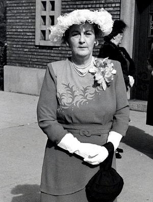
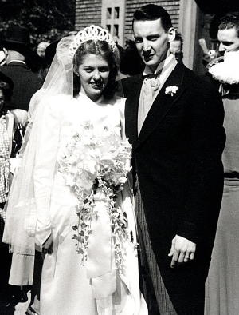
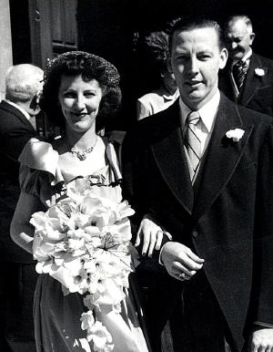
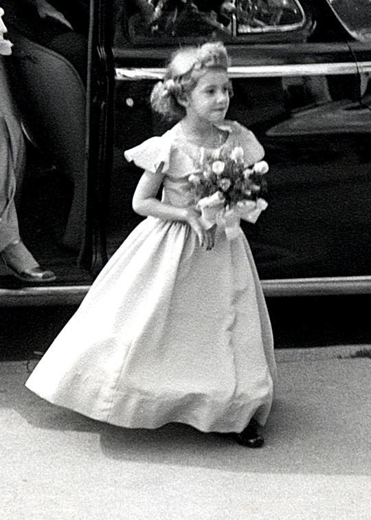
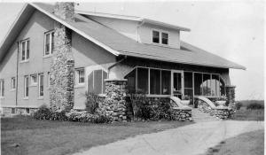
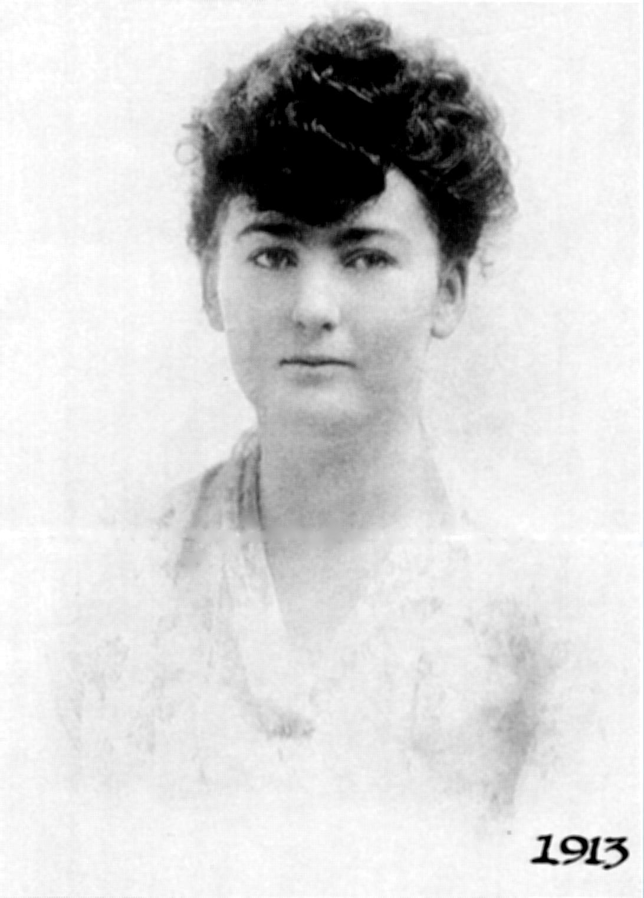
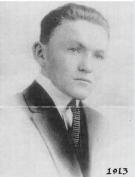

| 
(Mrs. Harold P. Streff) |

September 11, 1948 Betty (nee Pape) and Bud |
William A. Streff, Sr. - Monica Douglas Streff |
|  |
Robert V. Streff, Sr. |
 |
Doug, Monica & Aunt Gert |
 |
 |
Seated: Mary McCaughy, Nella McCaughy Quinn, Uncle Bill, Bob, Sadie McCaughy Lanahan, Jim Powers, Maryann Powers, Bud, Betty Pape, Nelly Kennedy, Monica. |
|
On the occasion of the wedding of their grandson, Jonathan Grandusky to Marianne Lazzaro |